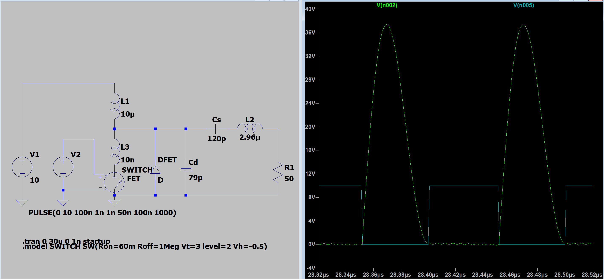
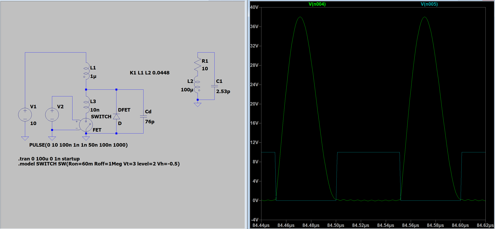

Lucas Wills | LinkedIn: lucas-wills | Email: lucasbwills@gmail.com | Discord: lucas_ww
IHFSSTC
Interrupted High-Frequency Tesla Coil with PLL Controller, Silicon Carbide, and Soft Switching
2024
Background
In early 2024 while working on other radio-frequency projects, I came across this video by channel jmartis2 showing a solid-state tesla coil operating at much higher frequencies than usual, which usually produces flame-like discharges, however by running in interrupted high-power pulses very interesting effects are achieved, where the arcs appear as trees with wispy curled tips. The video tells that it is operating at 7MHz, using SiC FETS and PLL giving a starting point but gives little other information. I was interested in reproducing this project and tried to reach out for more info on how it was done, but never heard back. So, this ended up being a project designed from scratch.
Design
So, I needed to design a Tesla coil to run at >7MHz, and to be able to be inturrupted quickly, so it must be able to quickly start and stop. Switching at frequencies this high make it absolutely critical to minimize switching losses, and for this reason solid-state Tesla coils operating above a few megahertz typically use a class-E switching topology which achieves zero voltage turn-off, and zero voltage and current turn-on if tuned perfect. This works quite well, but there is an issue with using the standard class-E topology for this particular project.
Lets first take a look at a normal class-E switching example. I threw together a basic simulation of a class-E inverter and the gate and drain waveforms of the switching device are shown. Notice that the voltage is zero as the switch is turned off, and both voltage and dV/dt are zero when turning on. This is how class-E eliminates almost all switching loss achieving extremely high efficiency. When used in a tesla coil setting, L2 and R1 are replaced by the primary coil and the coupled secondary coil which provides the load.

But, this topology requires a constant current source in the form of the choke L1. This is problematic for this project because of the need to rapidly turn the coil on and off to operate in repeated bursts. When the coil is cut off, there will still be energy stored in L1 and that energy needs somewhere to go. In our case, that would end up causing a voltage spike on the MOSFET drain, and the energy would be dissipated through avalanche breakdown of the MOSFET. Consider our choke is 10μH, and is reaching 50A of current. This gives us 12.5mJ of energy, which when interrupting at 1kHz would give us 12.5W of extra power dissipation in our MOSFET! Additionally, MOSFETs are typically built to handle some amount of avalanche breakdown, but repeating this process several thousand times every second may rapidly damage our MOSFET.
If only there were a way to achieve class-E switching with a constant voltage source instead of constant current...
Well it turns out, there is! Consider that the primary coil of our Tesla coil is not actually a pure inductor, but rather it is coupled to a secondary resonant circuit featuring inductance, capacitance and a significant resistance. This means that our primary coil will already basically act as a damped resonant circuit on its own, so Cs, L2 and R1 can be removed! This allows us to then place the primary coil where the choke (previously L1) was, and the choke can be left out with the only disadvantage to switching being slightly higher dV/dt initially. This is not a concern for these frequencies. The simplified class-E circuit is shown below, with waveforms just as good as before!

There is one unfortunate downside to this change, which is that the primary coil no longer has a series resonant capacitor to cancel out its impedance. This means that to get the highest primary currents and by extention, the highest power, we will need to use as few turns as possible on the primary. Because of the short on-times planned, in practice this means we will use one turn.